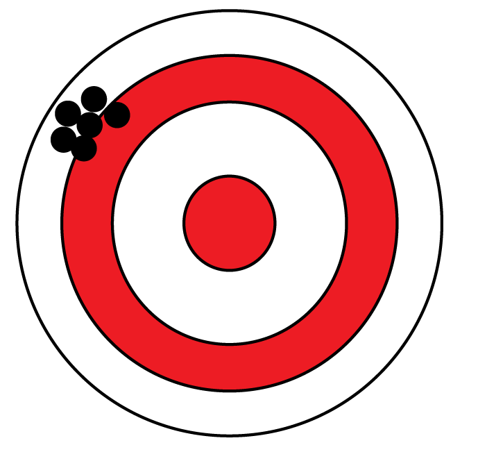
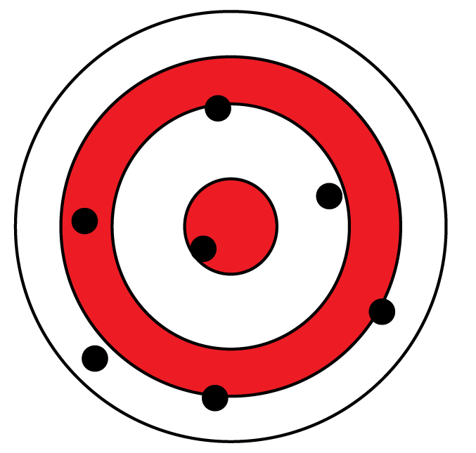
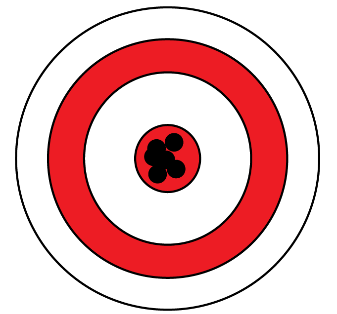
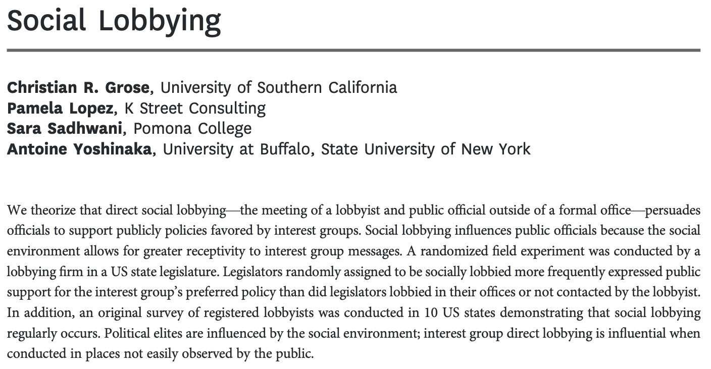
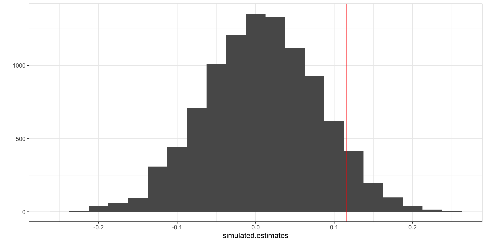

Week 8 Lecture 1

If we compare women who do and do not opt in to candidate preparedness training to study the effect of the training, our estimates will always be wrong in the same way.
Randomized experiments do not have bias!

If we randomly assign women to attend or not, we might get a different answer each time we do the experiment due to chance.

Standard error: A measure of how far off from the truth an experiment’s answer usually is.

| Variable | Description |
|---|---|
| caseid | Identifier for each legislator / district |
| supportgroup | Outcome. Whether the legislator agreed to list their name publicly as a sponsor of the bill |
| treat | Treatment. Three values:control = no contact from the lobbyistofficelobby = asked to meet in their officesociallobby = asked to meet at a social location (restaurant or bar) |
| ally | Lobbyist's rating of whether the legislator is an ally of the interest group (0, 1/3, 2/3, 1) |
| female | Legislator gender: 1 = female, 0 = not |
[1] 0.09178434 0.01668806 0.01668806 -0.11103979 0.09178434 0.06931964
difference_in_means() calculates it for you!A measure of how likely it is that an estimate of the size we saw would arise by chance even if the treatment had no effect.